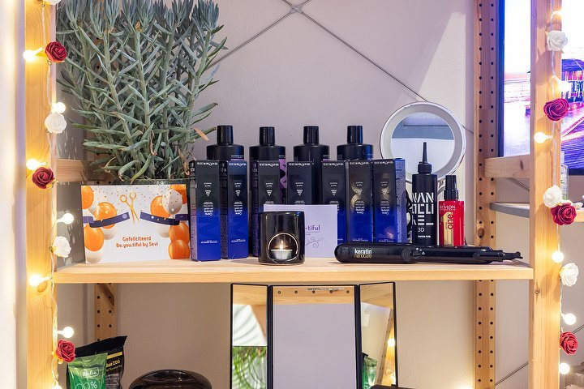
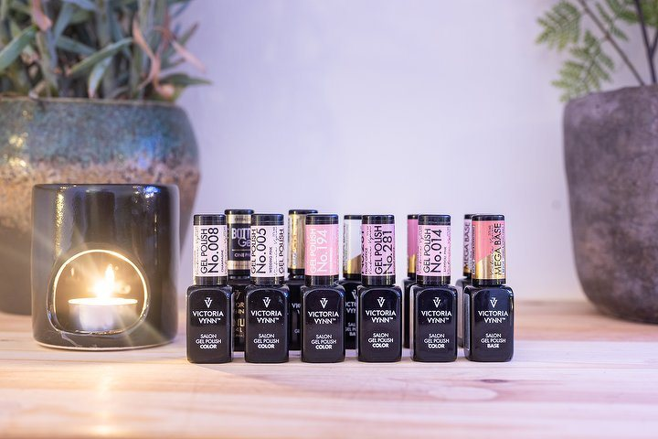
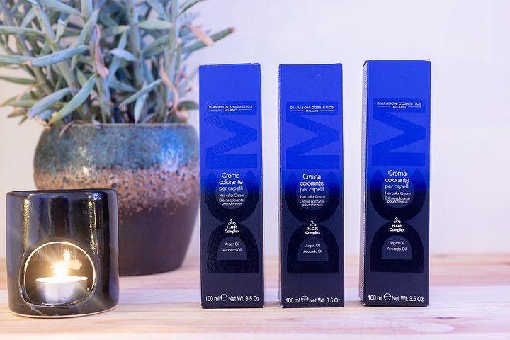
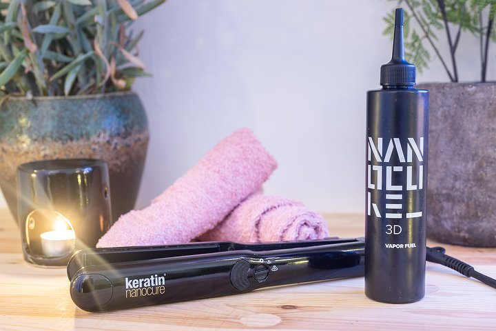

Schoonheidsinstituut · Haverkamp 222, Den Haag
Nog open als jij
klaar bent met werken.
Zeven dagen per week. Maandag, dinsdag, donderdag en vrijdag tot negen uur 's avonds, en in het weekend al om negen uur 's ochtends. Haar, nagels, wimpers en wenkbrauwen op één adres.
Openingstijden
Vraag een tijd aan4,9 uit 1125 beoordelingen op Treatwell

De uren waarop een ander dicht is
Wie om zes uur klaar is met werken kan bij de meeste salons nergens meer terecht. Hier wel: vier avonden per week tot 21:00, en zaterdag en zondag gewoon open.
Openingstijden
Vier dingen, één adres
Eenenveertig behandelingen, van gellak tot keratine. Alles komt van haar eigen boekpagina, met de prijs en de duur die daar staan.

Nagels
Manicure, pedicure, gellak en verlenging. Vanaf €15.
Bekijken
Wimpers & wenkbrauwen
Extensions, verven, epileren en threading. Vanaf €7,50.
Bekijken
Haar
Knippen, kleuren en keratine, in hetzelfde bezoek.
Bekijken
Harsen & make-up
Van bovenlip tot volledig, en make-up voor een avond uit.
BekijkenWat mensen zeggen
Vijfentwintighonderd keer werd hier een cijfer gegeven. Het gemiddelde bleef staan op 4,9.
1125 beoordelingen op Treatwell, haar eigen boeksysteem
Zin om te komen?
Kies een behandeling, laat je nummer achter en het bericht staat klaar. Bellen of appen kan ook; ze is er zeven dagen.
Waar
Haverkamp 222
Den Haag
Te bereiken met tram, bus en trein; bushalte Stuyvesantstraat.
Openingstijden
- Maandag
- 10:00 - 21:00
- Dinsdag
- 10:00 - 20:00
- Woensdag
- 10:00 - 18:00
- Donderdag
- 10:00 - 20:00
- Vrijdag
- 10:00 - 21:00
- Zaterdag
- 09:00 - 16:00
- Zondag
- 09:00 - 16:00